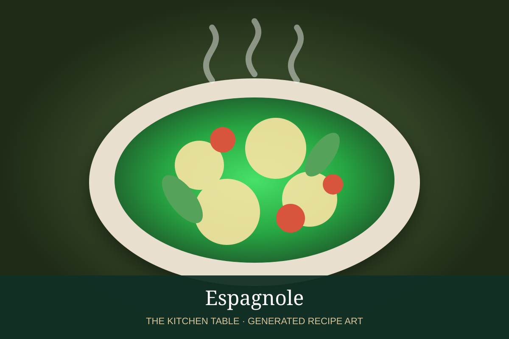

← French Mother Sauces
SAUCE · FRENCH MOTHER SAUCE
Espagnole
A rich classical brown sauce made from brown stock, brown roux, mirepoix, and tomato.
1 hr 30 minMakes about 3 cups

Photo: Jonathan Garnier
Ingredients
- 3 tbsp butter or beef fat
- 3 tbsp flour
- 1 small onion, diced
- 1 small carrot, diced
- 1 celery rib, diced
- 1 tbsp tomato paste
- 4 cups brown beef or veal stock
- Bay leaf and thyme
Preparation
- Cook fat and flour to a deep brown roux.
- Add mirepoix and brown well.
- Cook tomato paste briefly.
- Gradually whisk in brown stock and herbs.
- Simmer 45–60 minutes, skim, strain, and season.